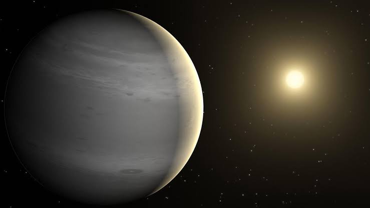
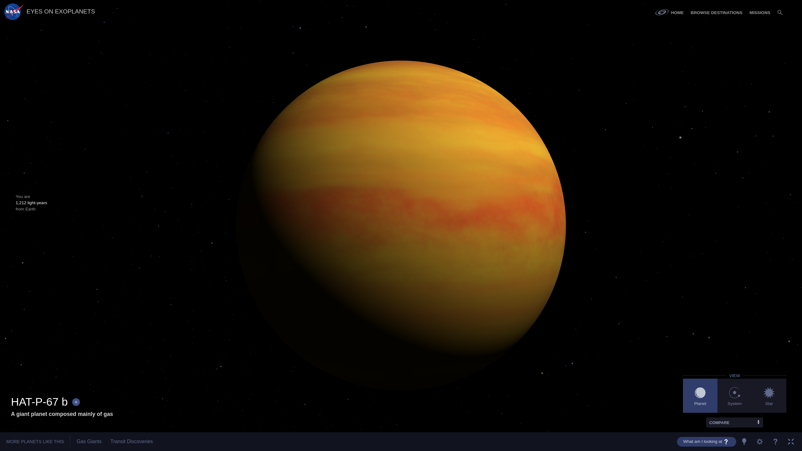
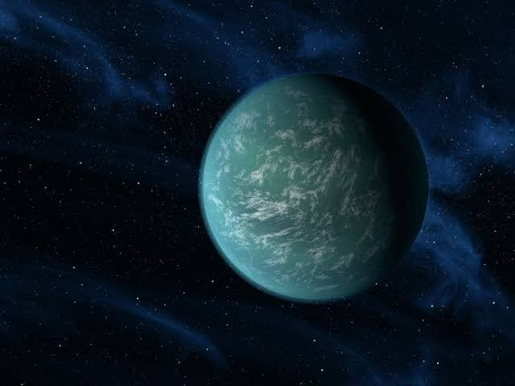
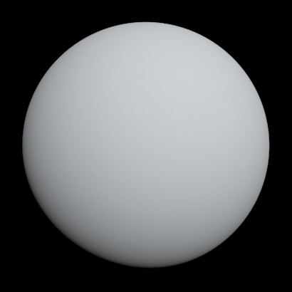
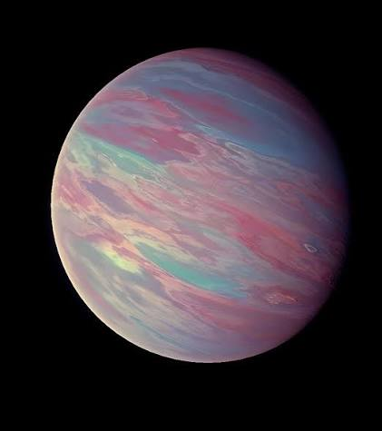

Monografía web sobre gigantes gaseosos y exoplanetas extremadamente grandes. Descubre datos curiosos, método de detección y por qué se consideran “los mayores”.
Ver los planetas 🔭"Se consideran "los mayores o gigantes" porque superan a Júpiter en radio, volumen o ambos, ya sea por su composición gaseosa, su cercanía extrema a su estrella (que infla su atmósfera) o por procesos de formación poco comunes. Estudiarlos ayuda a entender los límites físicos de cómo se forman y evolucionan los planetas."

Tipo: gigante gaseoso
Uno de los exoplanetas con radios grandes; “inflado” por su ambiente extremo.

Tipo: gigante gaseoso
Destaca por gran tamaño relativo entre exoplanetas detectados por tránsito.

Tipo: mini-Neptuno inflado
Kepler-22b es uno de los exoplanetas más famosos de la historia.

Tipo: gigante / gaseosa
Súper-Tierra caliente o un "Mini-Neptuno".

Tipo: gigante
Aunque el sistema es particular, sirve para mostrar la variedad de exoplanetas grandes.